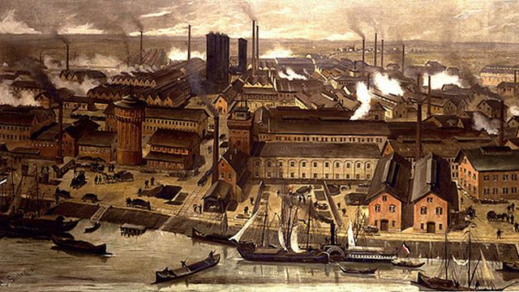

Luchas obreras en el siglo XIX: Derechos laborales y Sociales

La revolución Industrial impulsó el desarrollo del capitalismo y la producción, pero también incrementó la desigualdad
social al someter a los trabajadores a condiciones laborales precarias
En México la industrialización se consolidó durante el Porfiriato (1876-1911), periodo en el que predomino
- La explotación laboral: jornadas de 12 a 16 horas
- Bajos Salarios
- Falta de descanso
- Trabajo infantil y femenino mal remunerado
- Condiciones inseguras en las fabricas
Ante esas injusticias, los trabajadores comenzaron a organizarse para defender sus derechos
- Surgieron las sociedades mutualistas: Brindaban apoyo en casos de enfermedad, accidentes o desempleo
- Posteriormente se crearon los dindicatos. Inspirados en las ideas socialistas de Karl Marxy Friedrich Engels
- En México se formaron organizaciones como:
- El gran Circulo de Obreros
- Se realizaron huelgas como
- La de los Barateros en Pachuca 1872
- Se impulsaron intentis por sindicadizar como:
- El Congreso Obrero Permanente 1876
- Muchas de estas propuestas fueron reprimidas con violencia persecuciones y encarcelamientos.
Sin embargo, sentaron las bases para la creación de los sindicatos modernos y las leyes laborales del siglo XX